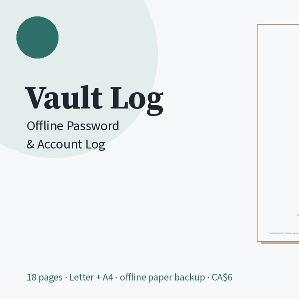

Free printable account log page
A private paper backup for the logins you can't afford to lose.

One printable page with rows for website, username/email, password or a hint, 2FA on/off, and date updated. Fill it by hand, then store it somewhere safe.
Download free PDF
Use it safely
Want the whole system? Vault Log: Offline Password & Account Log — CA$6: 18 pages including security tips, A–Z index, master accounts, account logs + cards, 2FA recovery codes, Wi-Fi & router, subscriptions, licences, change log, emergency access. Letter + A4. Get it on Gumroad →
- Keep it in a locked drawer or safe. Don't leave it out where people can see it.
- Write a hint, not the whole password, if you can.
- Don't photograph or scan filled pages.
- This is a blank paper organiser, not security software.
What's in the full pack
- Security tips & disclaimer page
- A–Z index + master accounts (email, phone, bank)
- 4 account log sheets + 2 account card pages
- 2FA recovery / backup code sheet
- Wi-Fi, router & device PIN page
- Subscription log · devices & software licences
- Password change log · emergency access notes
- Blank masters · US Letter and A4 PDFs
Disclaimer
Vault Log is a blank printable for your own records. It doesn't make accounts secure, and it doesn't replace a password manager or two-factor authentication. You're responsible for what you write and how you store it. Bently Printables can't see or recover anything you write.